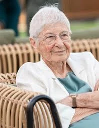

כפר עזה
אפשטיין בלהה ז"ל
חברת קהילת כפר עזה
סיפור חיים
בלהה אפשטיין ז״ל, בתם של מלכה ויהודה, התגוררה בקיבוץ כפר עזה. היא הייתה רעייתו של עמוס, אם להדס, ורד ואורי, וסבתא אוהבת לנכדיה.
בלהה הייתה מטפלת מיתולוגית בקיבוץ כפר עזה. דורות של ילדים גדלו תחת מבטה הטוב, בחיבוקה ובאהבתה. היא הייתה דמות חמה, מעניקה ומכילה, כזו שהמשיכה להיות משמעותית עבור הילדים שטיפלה בהם גם שנים רבות לאחר שגדלו.
נוגה, אחת מילדי קבוצת ״דגן״ שבה טיפלה בלהה, כתבה עליה: ״היית המטפלת שלנו, קבוצת דגן, בשנים משמעותיות מאוד, ובעצם, מעולם לא הפסקת להיות המטפלת שלנו. כל מפגש איתך, לאורך השנים, היה מלווה בחיבוק אוהב ופרגון נדיב. שמחת כל כך לקראתנו, והיית גאה בנו, כאילו היינו ילדיך שלך.״
בלהה הייתה גם אמנית ויוצרת, אישה סקרנית שידעה למצוא יופי בכל דבר וטוב בכל אדם. היא אהבה לצלם, ובצילומיה חזרה שוב ושוב אל הקיבוץ שאהבה: הצריפים הראשונים, המפעל, המועדון, השדות, ותושבי המקום.
בית הספר לצילום ״צילום בעם״ כתב עליה כי כמעט כל מה שצילמה - אנשים ומקומות - צולם בקיבוץ שכל כך אהבה. בצילומיה ניכרו אהבה, קרבה, חמלה וסקרנות עמוקה כלפי האנשים שסביבה.
כלתה סיפרה כי גם בשנותיה המתקדמות לא פחתה סקרנותה של בלהה כלפי העולם. היא ידעה לראות יופי בכל דבר, הייתה סבתא אוהבת ודואגת, וזכרה היטב מה כל נכד אוהב - אפילו איזו גלידה לשמור עבור כל אחד במקפיא.
שבעה באוקטובר והימים שאחריו בבוקר שבת, שמחת תורה תשפ״ד, 7 באוקטובר 2023, חדרו מחבלים לקיבוץ כפר עזה במסגרת מתקפת הטרור הרצחנית על יישובי עוטף עזה.
בלהה נרצחה בקיבוץ כפר עזה באותו יום. באותן שעות נרצחו במוקדים שונים בקיבוץ גם נכדיה נטע וניצן, וחתנה אופיר ליבשטיין ז״ל.
בלהה הובאה למנוחות בבית העלמין המקומי בקיבוץ כפר עזה. בת 81 הייתה במותה.
זיכרון ומילים מהלב נכדתה מעין כתבה: ״סבתא שלי, אוהבת אותך. תודה על הזכות להיות הנכדה שלך, ללמוד ממך ולראות אותך רק מתפתחת עם השנים. את בן אדם שכולו טוב.״
בני משפחתה, תלמידיה, ילדי הקיבוץ ואוהביה זוכרים את בלהה כאישה של חום, אהבה, סקרנות ויצירה. אישה שידעה להתבונן בעולם בעיניים טובות, לראות את היופי שבפשטות, ולהעניק תחושת משמעות ואהבה למי שפגש בה.
בעלה עמוס סיפר כי שנים קודם לכן, לאחר נפילת רקטה סמוך לביתם, הקריאה לו בלהה את השיר ״סוף והתחלה״ של המשוררת ויסלבה שימבורסקה - שיר על מה שנדרש מאנשים אחרי מלחמה: לנקות, לבנות מחדש, ולשוב אל החיים. הבחירה בשיר הזה ביטאה את מבטה של בלהה על העולם - מבט מפוכח, אנושי, רגיש ומלא חמלה.
בלהה נזכרת כמטפלת אהובה, אם, רעיה, סבתא, יוצרת ואישה שכולה טוב. זכרה נשאר בלב משפחתה, קהילת כפר עזה וכל מי שזכה להכיר אותה.